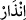
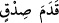

cümlede murad edilen Mekke kâfirleri değildir. Allah Teâlâ, “ (uyarma)” fiilini
genel olarak getirdi. Çünkü uyarı, mükellef olan kâfirlerden, mü’minlerin avam ve
havâssından herkese fayda verir. Kimileri cehennem ateşiyle uyarılır, kimileri de
nimetler yurdu olan cennette derecelerinin düşmesiyle uyarılır. Üçüncü bir kısım da
kerim olan Rabb’in cemâlini müşâhededen perdelenme ateşiyle uyarılıp korkutulur.
Âyette uyarma müjdelemeden önce getirilmiştir. Çünkü, derece itibariyle gereksiz
şeyleri izâle edip ortadan kaldırmak, gerekli şeyleri yapmaktan önce gelir. Öğüt ve
müjde, nefis inkâr ve günahlarla kirlenmiş olduğu müddetçe fayda etmez. Çünkü evi
güzel kokularla havalandırmak, ancak oradaki pislikleri yok edip süpürdükten sonra
olur.
Görmez misin ki bedenî hastalıkları tedaviye girişen doktor önce vücûdu pisliklerden
temizlemekle işe başlar. Sonra takviye edici tedaviyi tatbik eder. Aynı şekilde kalb
hastalıklarını tedavi edecek olan tabibin de evvelâ bozuk akideleri, düşük huyları, kalbi
bulandıran çirkin amelleri temizlemekle işe başlaması gerekir. Bunlara kötü âkıbetten
korkutma şerbeti içirir. Helâk edici şeylerden onu arındırır, sonra tâatlerde takviye
edecek şeylerle tedavi ederek sâlih amellerin güzel âkıbetiyle müjdeler. Bundan dolayı
peygamberliğin başında Allah Teâlâ, sadece inzârı; korkutma ve uyarmayı zikretmekle
yetinerek şöyle buyurmuştur: “Ey elbisesine bürünen, kalk uyar!” (el-Müddessir,
74/1-2)
Âyetteki “” ifâdesi aslında “doğruluk ayağı” demektir. Böyle
isimlendirilmesi, bir şeyi vâsıtasının/âletinin adıyla isimlendirmek kabîlindendir.
Çünkü öne geçmek ve önde gelmek ayak ile olur. Nitekim Arapça’da nimet de “el” diye
isimlendirilir. Çünkü nimet el ile verilir. Kadem’in sıdka; yani ayağın doğruluğa izâfesi,
doğruluk ve onun gerçekleşmesinde mübâlağa ifâde etmesi için mevsûfun sıfatına
izâfesi kabîlindendir. Sanki o sıfatın doğruluğu ve gerçekleşmesi ayaktan doğmaktadır.
Sıfat açıklanmak istenince bu ancak mevsufunun açıklanması ile mümkün olur.
İbn Abbas (r.anhümâ)’dan rivâyet edildiğine göre şöyle demiştir: “Kademe sıdkın”,
Peygamberlerinin mü’minlere şefâati demektir. O kendilerini cennete götürecek
imamları, rehberleridir. Mü’minler ise onun izinde ve peşindedir.
(Yâ Rasûlallah!) Özür dileyen âsîlere şefâat ederim buyurdun
İşte o kereme nâil olmak için gönül günaha düştü
“Kâfirler” hayret eden Mekke kâfirleri Rasûlullah (s.a.)’i göstererek “Bu apaçık bir
sihirbazdır.” dediler.” Bu ifâdede aslında onların, Rasûlullah (s.a.)’de kendilerini âciz
bırakan hârikulâde bir takım işler gördüklerinin itirafı vardır.
Bilesin ki kâfirleri, nefis Fir’avn’unun sihirbazları büyülemiştir. Bu sebeple haktan
kör, sağır ve dilsiz olmuşlardır. Artık onlar hakkı anlamaz ve hakka çağırana tâbi
olmazlar. Nefis, baş olma sevgisi ve ilerleyip yükselme arzusu üzere yaratılmıştır. Onun
için başkasının emri altına girmeye razı olmaz. Nefsi ıslâh etmek ancak riyâsetin zıddı
olan ubûdiyyet; yani Hakk’a kulluk ve mürşide boyun eğmekle olur.